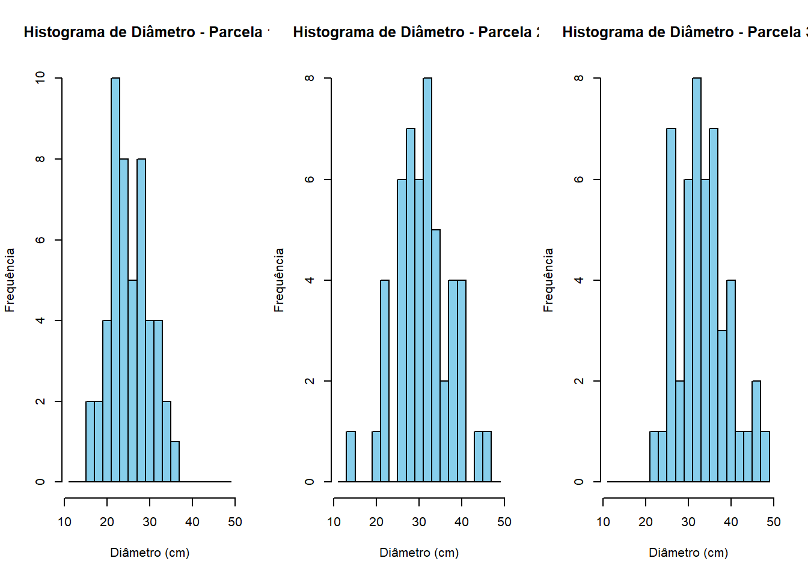

1 Histogramas para distribuição diamétrica
Este tipo de abordagem é útil para se verificar o grau de aproximação da Normalidade dos dados pela “formato” das classes.
Os engenheiros florestais geralmente estabelecem classes diamétricas de 1,5 ou 2,0 cm para poderem comparar entre si as inúmeras parcelas; bem como para acompanhar a mudança de classe das árvores ao longo do tempo.
1.1 Criando dados para demonstração
# Instalar pacotes, caso ainda não tenham sido instalados
if (!require(writexl)) install.packages("writexl")
if (!require(readxl)) install.packages("readxl")
# Carregar pacotes
library(writexl)
library(readxl)
# Definir número de árvores por parcela
n_arvores <- 50
# Gerar dados de 3 parcelas com diâmetros distribuídos normalmente
set.seed(123) # Para garantir reprodutibilidade
parcela1 <- rnorm(n_arvores, mean = 25, sd = 5) # Parcela 1 com média 25 cm e desvio padrão 5 cm
parcela2 <- rnorm(n_arvores, mean = 30, sd = 7) # Parcela 2 com média 30 cm e desvio padrão 7 cm
parcela3 <- rnorm(n_arvores, mean = 35, sd = 6) # Parcela 3 com média 35 cm e desvio padrão 6 cm
# Criar um data frame com os dados das parcelas
dados_inventario <- data.frame(
Parcela = rep(c("Parcela 1", "Parcela 2", "Parcela 3"), each = n_arvores),
Diametro = c(parcela1, parcela2, parcela3)
)
# Abrir uma janela para escolher o diretório
# caminho_diretorio <- choose.dir()
# Salvar os dados em um arquivo .xlsx
# arquivo <- file.path(caminho_diretorio, "dados_inventario.xlsx")
# writexl::write_xlsx(dados_inventario, arquivo)
# cat("Dados de inventário salvos em:", arquivo, "\n")1.2 Construindo os histogramas
# Certificar que a coluna "Diametro" seja numérica
dados_inventario$Diametro <- as.numeric(dados_inventario$Diametro)
# Definir as classes diamétricas com intervalo de 2 cm
intervalo <- 2
min_diametro <- floor(min(dados_inventario$Diametro)) # Valor mínimo de diâmetro arredondado para baixo
max_diametro <- ceiling(max(dados_inventario$Diametro)) # Valor máximo de diâmetro arredondado para cima
intervalos <- seq(min_diametro - 2, max_diametro + 2, by = 2) # Definir as classes com intervalo de 2 cm
# Criar layout para os gráficos
par(mfrow = c(1, 3)) # Define 3 gráficos em uma linha
# Definir lista de parcelas
parcelas <- unique(dados_inventario$Parcela)
# Loop para plotar histogramas de cada parcela
for (parcela in parcelas) {
# Selecionar os dados da parcela atual
dados_parcela <- dados_inventario[dados_inventario$Parcela == parcela, "Diametro"]
# Plotar o histograma
hist(dados_parcela,
breaks = intervalos,
main = paste("Histograma de Diâmetro -", parcela),
xlab = "Diâmetro (cm)",
ylab = "Frequência",
col = "skyblue",
border = "black")
}